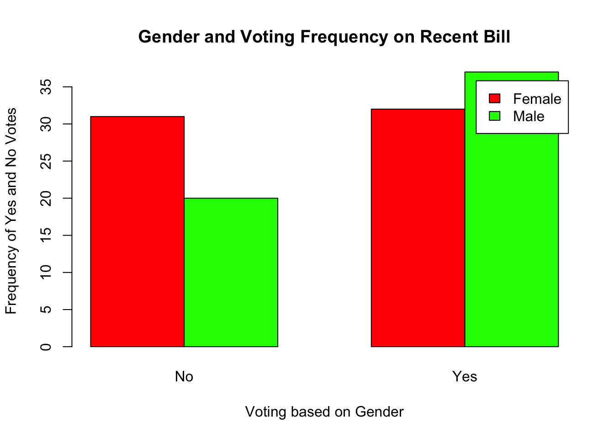

Proposition_Data <- tribble(
~Yes, ~No,
150, 50)Chi Square
Introduction to Chi-Square
Not all data that is collected meets the standards for being parametric or based on populations. Some data that is collected is based on frequencies. Polling data is often of this type. If a person is interested in who might win the next election, they may run a poll like many did in the most recent presidential election between Biden and Trump.
What makes data based on frequencies different is that the mean cannot be used for analysis. Frequency data is often based on categories or nominal data, thus it doesn’t make sense to compare these variables based on the types of statistical analyses we’ve done so far. Instead, we’ll use what is known as a Chi-Square test. \[ Chi\;Square\;Test = \chi^2 \] Let’s start with a very simple example. Perhaps, you are trying to decide whether a certain proposition will pass in the county and you want to decide if there is a preference. You collect data from 200 participants about whether they are in favor of the proposition or against the proposition on a simple yes vs. no question.
If there is no preference in the county, what would you expect the outcome of your survey to be? Well, if about the same amount of people were for the proposition as were against it, the outcome would be 50% yes and 50% no or half the participants would be against it, half for it. This is called the expected frequency or the expected frequency if the null hypothesis is correct, which in this case would be no particular preference in the sample for the proposition. Here’s the formula. \[ f_e = \frac {total\;in\;survey}{number\;of\;categories}= \frac {200}{2} \] So in this case the expected frequency would be 100. So if there was no preference for a particular county proposition we would expect 100 persons to be for it and 100 persons to be against it. So Let’s say here is what the actual data looked like. 150 were for it and 50 were against it. This is called the observed frequency. \[ observed\;frequency = f_o \] The chi square test is a combination of these two numbers. Basically the larger the difference between the observed and expected frequencies, the more likely there is a real preference either for or against the proposition. Here is the formula. \[ X^2 = \Sigma \frac{(f_o-f_e)^2}{f_e} \] So the chi square test is the sum of the observed minus expected frequencies squared divided by the expected frequencies for each cell. In this case we have 2 cells one for those who answered yes in favor of the propsosition (150) and those who answered no against the proposition (50). So the computation would look like this: \[ \frac{(150-100)^2}{100}+\frac{(50-100)^2}{100} \]
So in this case our answer turns out to be a Chi Square value of 50, which definitely reaches statistical significance (p < .001). Thus there does seem to be a preference in favor for the proposition in the county.
R allows for the same types of statistical analysis without having to calculate the entire formula.
The chi square test just calculated is called a single variable chi square because we are just looking at a single variable. It can also be calculated using R.
First we need to create a contingency table, which is simply a table of contingent frequencies based on the data we’ve collected. Here I’ll use a tibble to create the dataset.
Then we just simply run the chi square test. Note the code correct = FALSE. We add this because we don’t want to use the continuity correction, which is necessary when expected frequencies are below 5 (Remember in this instance our expected frequency would be 100).
chisq.test(Proposition_Data, correct = FALSE)
Chi-squared test for given probabilities
data: Proposition_Data
X-squared = 50, df = 1, p-value = 1.537e-12Two Variable Chi-Square
Another way that the chi square test is used is the testing of relationships between variables. Thus, are the variables related to each other or are they independent of each other?
For example, Look at dataset ch19ds2.
head(ch19ds2) Sex Vote
1 Male Yes
2 Male Yes
3 Male Yes
4 Male Yes
5 Male Yes
6 Male YesThere are two variables, gender (labeled here sex) and Vote, which was whether they voted yes or no on a recent ballot measure. First let’s look at a contingency table to get an overview of the data.
Vote_Gender_table <- table(ch19ds2)
Vote_Gender_table Vote
Sex No Yes
Female 31 32
Male 20 37So we want to see whether there was a relationship between gender and how persons voted on a particular measure. Here again, the Null hypothesis would assume that these variables are independent of each other. The frequency of No and Yes would be roughly proportional for both males and females. The alternative hypothesis assumes these frequencies are different based on whether you are a male or female.
To run a chi-square test and construct a graph we need to create a different way of representing the data called a matrix. A matrix is a display of different variables using dimensions. A matrix counts how many cases there are for various categories.
For example, based on our Chi_table above there are 31 females who voted No, 20 males who votes no, 32 females who voted yes and 37 males who voted yes. In order to run the Chi Square test, the data must be entered as a matrix.
Here is how we create a matrix
# Create a vector with frequency values
# Write the values by filling in the rows of the first
# column, then the second, and so on.
Matrix1 <- c(31, 20, 32, 37)
#Change the vector into a matrix by assigning the dimensions.
#In this case we want a 2 x 2 matrix, so 2 rows and 2 columns
dim(Matrix1) <- c(2, 2)
# change column names
colnames(Matrix1) <- c("No","Yes")
# change row names
rownames(Matrix1) <- c("Female","Male")
#Check out the finished product
Matrix1 No Yes
Female 31 32
Male 20 37Look a little bit closer at the code.
Start with creating an object as a vector of numbers, in this case we called it Matrix1. The numbers will fill in starting at row 1 column 1 and fill in column 1 followed by column 2.
Next, turn the vector into a matrix using the
dim()argument. Use the “cbind” argumentc(), to specify how many rows and columns you need. In this case we want 2 rows and 2 columns. The first number is the number of rows and the second number is the number of columns.Finally, use the
colnamesandrownamesarguments to name what you want your rows and columns to be.Then you’re ready for the Chi Square test! \(X^2\)
Performing the test is fairly straight forward. The matrix is the dataset and the continuity correction is unnecessary because our expected frequencies for each cell is above 5. So we add the code, correct = FALSE, after the name of the matrix.
chisq.test(Matrix1, correct = FALSE)
Pearson's Chi-squared test
data: Matrix1
X-squared = 2.441, df = 1, p-value = 0.1182The chi square value is very low and the p value is well above .05, so there is not a relationship between these two variables.
Effect size for chi square
For an effect size, we use the odds ratio, which looks at the odds of the outcome we obtained. Obviously the higher the odds ratio the stronger the relationship. To find the odds ratio, first let’s look at the ratio for yes vs. no based on gender. For no it was 31 females to 20 males.
31/20[1] 1.55So this was 1.55 and we’ll also look at yes.
32/37[1] 0.8648649So the odds of their being a difference between males and females on yes vs. no. would be dividing these two numbers.
(31/20)/(32/37)[1] 1.792188So females were 1.79 times more likely to answer no then yes on the survey, which isn’t very large and since the overall test was not significant the effect size is not evaluated.
Next, a bar graph helps to show the differences in frequencies and the direction of the differences. In this case, the base R package can be used to create a simple bar graph based on the frequencies or counts in the cells using the barplot argument.
barplot(Matrix1, beside = TRUE,
col = c("red", "green"), legend.text = TRUE,
xlab = "Voting based on Gender",
ylab = "Frequency of Yes and No Votes",
main = "Gender and Voting Frequency on Recent Bill")
Finally, here is how you report the results:
There was a not a significant association between gender and their voting preference (yes vs. no), \(\chi^2(1) = 2.441; p = 0.12\). Based on the odds ratio, females were 1.8 times more likely to vote no than males.